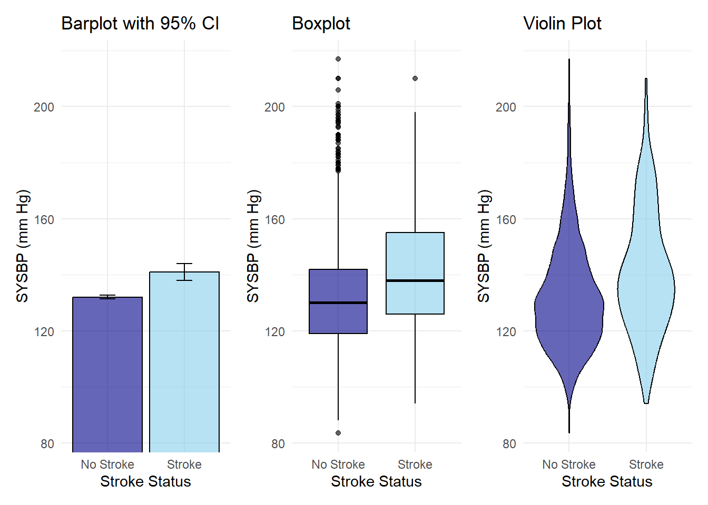
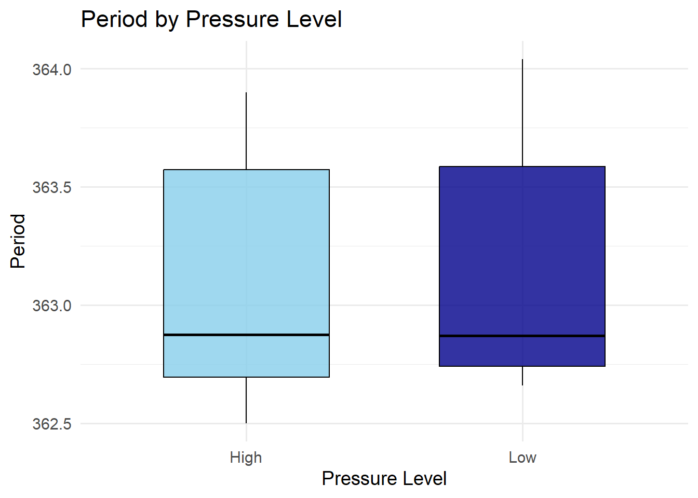
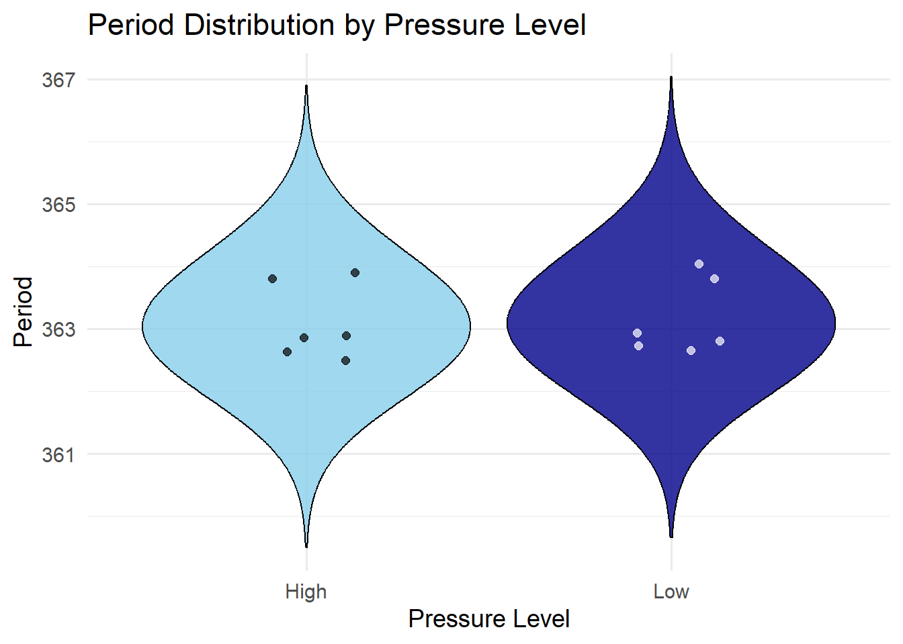

Chapter 16 Mean differences between two samples
Testing statistical dependence lies at the core of statistical inference. In many scientific studies, we want to know whether changes in one factor are associated with changes in an outcome. To answer this, experiments are planned with great care so that we can identify and measure the sources of variation in the data.
Variation in an outcome can come from several sources. Some of it is due to measurement error, which improved techniques can often reduce. Some comes from intrinsic differences between the observational units (people, animals, samples, etc.). If these differences are irrelevant to the main question, we can control for them — for example, by grouping similar units together and repeating the experiment under the same conditions. Sometimes, however, controlling all conditions is impractical or undesirable. In those cases, we can use randomization so that uncontrolled influences become part of the random error, which can then be handled statistically.
In the kind of experiments we consider here, we deliberately change one condition of interest, repeat the random experiment, and record the outcome. Each experimental unit is observed under only one condition — we do not (or cannot) measure the same unit under multiple conditions.
When the outcome is a continuous variable, we may ask how its expected value changes as the condition changes. The theoretical question is: Does changing the condition alter the probability distribution of the outcome, and therefore its mean? Experimentally, if the averages differ between conditions, we want to know: To what extent can we conclude that the outcome is statistically dependent on the condition?
In this chapter, we will focus on testing statistical independence between one continuous variable and two discrete conditions (or groups). We will start with the case where \(n\) is large and the central limit theorem applies, and illustrate its use using the transformative finding in preventive health from the Framingham cohort that established hypertension as a risk factor for stroke.
Next, we will introduce the \(t\)-test, which applies when \(n\) is small and the outcomes are normally distributed with equal variances. This will be illustrated with James Clerk Maxwell’s counterintuitive discovery that gas viscosity is independent of pressure — a key finding in the foundation of statistical mechanics.
Finally, we will consider the case where the conditions also change the variances of normally distributed outcomes. Here, we will present the two-sample \(t\)-test for unequal variances and demonstrate its application to comparing the weights of leptin knocked out mice, demonstrating that hormone encoded by the gene plays a role in obesity.
16.1 Difference in means between two groups
We will consider an outcome of a random experiment that follows a normal probability model:
\[ Y \sim N(\mu, \sigma^2) \]
We aim to measure this outcome several times under two different conditions, or in two groups, called \(A\) and \(B\). Our goal is to determine whether the expected value (mean) of the random variable changes between these conditions.
When testing a hypothesis about the mean, but without knowing a fixed reference value \(\mu_0\) for comparison, we often estimate it by repeating the experiment under a reference condition \(A\), often referred to as the control condition. We then compare this estimate to the mean obtained under a new condition \(B\), where we may have applied a new treatment or selected units from a specific case. Examples include testing clinical differences between cases and controls, comparing a drug to a placebo, or changing the conditions of a physical system.
Example (Framingham cohort)
In 1948, 5209 men and women from Fremingham, Massachusetts, were recruited to be followed during their life course to find the causes of hart disease. The cohort, was transform epidemiological research with unprecedented insights into cardiovascular disease. From this investigations we now know, for example, that hypertension is a risk factor for stroke (Kannel et al. 1961), which has changed clinical practice, ever since.
Let us explore this finding with available data from the cohort. While access to three generations of full data can be obtained to perform comprehensive analysis, here we will illustrate the fining with the teaching data set from the Framingham Heart Study.
In this data matrix, we have can take for instance two conditions: \(A:Stroke\) and \(B:No \,stroke\) and assume that
- the level of systolic blood preasure (SYBP) in a randomly chosen man between 40 and 59 years of age who reported a stroke has a probability density
\[Y_A \sim N(\mu_A, \sigma_A^2)\]
- the level in a man with the same characteristics but who has not suffer a stroke has a probability density for SYBP
\[Y_B \sim N(\mu_B, \sigma_B^2)\]
16.2 Data
One random experiment has two variables: \((c, y)\):
\(C \in \{A,B\}\) is a discrete variable with two possible outcomes, one for each experimental condition.
\(Y\) a continuous variable, whose observation produces the outcome of interest
The repetition of the random experiment \(n\) times is therefore a table such as
\[ \begin{array}{ccc} \mathbf{Individual} & \mathbf{Condition} & \mathbf{Outcome} \\ c_1 & \text{A} & \text{121.0} \\ c_2 & \text{A} & \text{127.5} \\ c_3 & \text{A} & \text{141.0} \\ \vdots & \vdots & \vdots \\ c_{n-2} & \text{B} & \text{153.5} \\ c_{n-1} & \text{B} & \text{160.0} \\ c_{n}& \text{B} & \text{173.0} \\ \end{array} \]
For example, subject \(1\) was under condition \(A\) and had outcome \(121.0\) for \(Y\).
Example (Framingham cohort)
In the Framingham cohort the SYBP is a continuous outcome in 40-59 year old man
- \(SYBP \in (83.5, 217)\)
And the condition is whether the same individual reported having a stroke or not:
- \(stroke \in \{yes:A,no:B\}\)
\(201\) men reported having a stroke and \(2760\) reported not having one. We want to know whether the probability of having high systolic blood pressure changes between stroke patients or controls. We may also ask whether the expected value of SYBP is significantly higher in stroke patients. Our research interest is to show that SYSBP is statistically dependent from stroke status.
16.3 Difference between means
We take the SYSBP levels conditioned to each stroke, and observed:
\(n_A=201\) stroke patients had a mean of \(\bar{y}_A=140.91\) and \(s=21.79\)
$n_B=2760 $ non-stroke controls had a mean of \(\bar{y}_B=133.99\) and \(s=18.42\)
We can show a plot for the mean in each condition overlying the histogram of the data.

Or we can overlay the histograms horizontally

The plots suggest that stroke patients will have more probability of high SYBP than controls, however some stroke patients will have very low SYBP, and some controls high. The dispersion of the outcome is large in both groups but, on average stroke patients have more SYPD. Is the difference between the averages \(\bar{y}_A\) and \(\bar{y}_B\) (the dots at the bottom of the histogram) statistically significant?
How confident are we on the magnitude of this difference? That is, could have we got this lower higher levels of SYBP in stroke patients by chance alone (null hypothesis) or there is biological difference that cannot be fully explained by chance (alternative hypothesis)?
16.4 Hypothesis test
Let us formulate the hypothesis contrast
\(H_0: \mu_A=\mu_B\) The null hypothesis is that both groups have the same mean.
\(H_1: \mu_A \neq \mu_B\) The alternative hypothesis (research interest) is that the means are different between groups.
Only one can be true. How would the data decide? To make things easier let us redefine the contrast.
If we consider \(\delta\), the difference between means \(\delta=\mu_A-\mu_B\), then the hypotheses can be written as
- \(H_0: \delta=0\)
- \(H_1: \delta\neq 0\)
Either the difference between the means is zero or not. \(\delta\) is the parameter of interest in our study, and to test hypotheses on it, we need to find an estimator for it.
16.5 Estiamtor of the mean difference
The statistic \(D=\bar{Y}_A-\bar{Y}_B\), that is the difference in averages, is an estimator of \(\delta\). In particular, we can show that the the estimator is
- unbiased because its expected value is the parameter
\[E(D)=E(\bar{Y}_A-\bar{Y}_B)=\mu_A-\mu_B=\delta\]
- and consistent because its variance gets smaller when \(n=n_A+n_B\) gets bigger
\[\sigma_D^2=V(\bar{Y}_A-\bar{Y}_B)=\frac{\sigma^2_A}{n_A}+\frac{\sigma^2_B}{n_B}\]
This means that we can take one observed value of \(D\), that is \(d_{obs}\), for the estimation of the parameter \(\delta\).
It is important to have a clear idea of the different components in the estimation and the hypothesis test, as they are shown below. Those are the distributions of the data, the distributions of the averages and the means for each condition, and their difference.

Remember that, for instance, the average \(\bar{Y}_A\) is also called the sample mean, and it has a distribution that is centered on \(\mu_A\) and has variance \(\frac{\sigma_A^2}{n_A}\).
16.6 Standardized error
If \(Y_A\) and \(Y_B\) are both normal independent variables, their averages are normal and so it is their difference \(D\). Therefore, the standardization of \(D\) is approximately standard normal
\[Z=\frac{D-\delta}{\sqrt{V(D)}}=\frac{\bar{Y}_A-\bar{Y}_B -\delta}{\sqrt{\frac{s^2_A}{n_A}+\frac{s^2_B}{n_B}}} \sim_{approx} N(0,1)\]
when both \(n_A\) and \(n_B\) are large. It is approximate because as we do not know the variances \(\sigma^2_A\) and \(\sigma^2_B\), we estimated them with \(s_A^2\) and \(s_B^2\).
We can also use this approximation when we do not know the distributions of \(Y_A\) and \(Y_B\), as a result of the central limit theorem, when both groups have large sample sizes.
16.7 Standardized error for the null
If the null hypothesis is true (\(\delta=0\)), then when we estimate \(\delta\) with \(D\) we make an error. When \(n\) is large, the standardized error from the null hypothesis is the statistic
\[Z=\frac{\bar{Y}_A-\bar{Y}_B}{\sqrt{\frac{s_A^2}{n_A}+\frac{s^2_B}{n_B}}}\]
that follows a standard normal distribution because of the central limit theorem.
To test the hypothesis we then ask if the observed \(z_{obs}\) is within the acceptance region of the null hypothesis.
In particular, we ask: is the probability of observing a more extreme value than \(z_{obs}\) lower than \(\alpha=0.05\) if the null hypothesis is true?
The value of \(z_{obs}\) is the standardized value of the observed difference between the averages:
\[z_{obs}=\frac{d_{obs}}{\sqrt{\frac{s_A^2}{n_A}+\frac{s^2_B}{n_B}}}\]
For our data, we have that the observed standardized mean difference is
\[z_{obs}=\frac{\bar{y}_A-\bar{y}_B }{\sqrt{\frac{s^2_A}{n_A}+\frac{s^2_B}{n_B}}}=\frac{140.91-131.99}{\sqrt{\frac{21.79}{201}+\frac{18.42}{2760}}}=5.95\]
Since our hypothesis is two tailed then the the two-tailed \(pvalue\) is
\[pvalue=2(1-\Phi(5.95))=2.68 \times 10^{-9}\]
which is much lower than \(\alpha\).
Therefore, we reject the null hypothesis that \(H_0:\delta=0\) that is that the SYBP in stroke patients and controls are equal. In other words, we have strong evidence that the mean SYBP between conditions are different.
In Python and R, we use the fact that the standardized statistic \(Z\) when \(n\) is large is close to a \(t\) distribution with large degrees of freedom, even when the outcome distributions are not normal. We can use the \(t\)-test as an approximation for the normal standard in this cases
Python
import pandas as pd
from scipy import stats
# Assuming dat is already a pandas DataFrame
# Example: dat = pd.DataFrame({"SYSBP": [...], "STROKE": [...]})
# Split into two groups
group_no_stroke = dat.loc[dat["STROKE"] == "No Stroke", "SYSBP"]
group_stroke = dat.loc[dat["STROKE"] == "Stroke", "SYSBP"]
# Perform independent two-sample t-test (equal_var=False is Welch's t-test)
t_stat, p_value = stats.ttest_ind(group_no_stroke,
group_stroke, equal_var=False)
##Framingham Data
library(riskCommunicator)
data(framingham)
sel <- framingham$SEX == 1 &
framingham$AGE > 40 &
framingham$AGE < 59
dat <- data.frame(
SYSBP = framingham$SYSBP[sel],
STROKE = factor(framingham$STROKE[sel], labels = c("No Stroke", "Stroke"))
)
t.test(SYSBP~STROKE, data=dat)We may conclude that systolic blood pressure is different between stroke patients and control, suggesting high SYBP as a potential factor for the disease. However, this simple preliminary approach needs to be taken with care. The data analyzed did not record whether the SYBP was measured after or before the stroke. In addition, we do not know which of those control patients had a stroke after they reported their status. To determine whether SYBP is an independent cause of stroke, the Framingham cohort followed the patients for several years recording SYBP and cardiovascular health. Their more refined analysis took the continuous values of SYBP as conditions for the occurrence of stroke during follow up.
We can illustrate the results of the comparison between two group means in three different ways:
Using a bar plot with confidence intervals for the estimate in the mean of each group. Note that in a report we usually add the confidence intervals for the means. Non-overlapping confidence intervals also indicate that the difference between means is statistically significant, as this is an equivalent criteria to reject the null hypothesis.
Using a boxplot. In this plot, we do not show the means but a summary of the distribution properties of the data at each condition. Remember that the properties are the median (the middle line), the quartiles (the box edges) and the \(5\%\) and \(95\%\) quantiles (the whiskers).
Using a violin plot. These are smoothed mirrored histograms overlaid. Here, you do not see the averages of each group but the modes (peaks of the histograms). However, you get the idea that the probability of high SYBP is higher in stroke patients that in controls.

16.8 Mean differences when \(n\) is small
Example (Gas viscosity)
James C. Maxwell grounded the field of statistical mechanics with a remarkable prediction. He developed the theory, designed the experiment and measure in the laboratory the fact that the viscosity of gases do not depend on their pressure (Maxwell 1866).
This counter-intuitive phenomena was derived from the molecular properties of gasses and help convince the scientific community that statistical properties of molecules underlie some properties of macroscopic objects.
Theoretically, we showed that gas viscosity depends on two phenomena that exactly cancel out. He deigned a rotating pendulum in a container that could be subject to different gas pressures. When the pendulum rotates then its period to complete a full swing gets longer as the number of molecules in the gas get larger because it hits more molecules slowing it down. However, in gases, as the pendulum hits the molecules, if the pressure is increased, then those molecules would not travel far and get dragged along with the pendulum, creating a gas pocked around it diminishing the drag force. These to phenomena cancel out making the viscosity independent of the pressure.
We how the results of Maxwell’s experiment, dividing the pressures reported into two conditions low (\(<6\))mmHg and high (\(>19\))mmHg and the time the pendulum took for a full swing (s). While the pressures were low to examine rarefied gases, the change of in pressure in the experiment was threefold. Maxwell pre-processed the time periods to compute the rate of decay of arc lengths to compare it with theoretical values. Here, we illustrate the raw measurements of gas viscosity throughout pendulum periods.
\[ \begin{array}{ccc} \mathbf{Experiment} & \mathbf{Pressure} & \mathbf{Period} \\ 1 & \text{Low}& 362.66\\ 2 & \text{Low}& 362.80\\ 3 & \text{Low}& 364.04\\ 4 & \text{Low}& 362.72\\ 5 & \text{Low}& 362.94\\ 6 & \text{Low}& 363.80\\ 7 & \text{High}& 362.64\\ 8 & \text{High}& 362.50\\ 9 & \text{High}& 362.86\\ 10& \text{High}& 363.80\\ 11& \text{High}& 362.89\\ 12& \text{High}& 363.90\\ \end{array} \]
The experiment was then repeated a small number of times \(12\). We can make a boxplot for each condition.

We assume that
- the period of the pendulum under high pressure is normal random variable
\[Y_A \sim N(\mu_A, \sigma^2)\]
- the period of the pendulum under low pressure is also normally distributed
\[Y_B \sim N(\mu_B, \sigma^2)\]
- both distributions have the same variance \(\sigma^2\).
16.9 Data
One random experiment has two outcomes: \((preassure, period)\).
The pressure is a categorical variable and determines the conditions of the experiment:
- \(Pressure \in \{High:A, Low:B\}\)
The period is a continuous variable and it is the outcome of interest.
- \(T \in (360, 365)\) (seconds)
16.10 Difference between means
Maxwell measured the periods conditioned to two different pressures, and observed:
\(n_A=6\) experiments under high pressure had period average \(\bar{y}_A=363.0983\) an standard deviation \(s_A=0.600547\)
\(n_B=6\) experiments under low pressure had period average \(\bar{y}_B=363.16\) an standard deviation \(s_B=0.6009326\)
We can draw violin plots per group

We see that the distributions are very similar similar and their means differ in 0.06 seconds. Can we have a statistical test for this difference?
16.11 Hypothesis test
We can again formulate the hypothesis on the difference between means \(\delta=\mu_{high} -\mu_{low}\)
\(H_0: \delta=0\). The null hypothesis (research interest) assumes that the pendulum will take the same time to swing in high and low pressures.
\(H_1: \delta \neq 0\). Therefore, the alternative hypothesis is that the mean periods under different pressures are different.
16.12 Estimator of the mean difference
The statistic \(D=\bar{Y}_A-\bar{Y}_B\) is again an unbiased estimator of \(\delta\)
\[E(D)=\delta\]
Since the periods for \(A\) and \(B\) are normal variables with the same variance \(\sigma^2\) each sample variance in each group is an estimator of \(\sigma^2\). That is \[\hat{\sigma}^2=s^2_A=s^2_B\]
then (Theorem) the standardized error
\[T=\frac{\bar{Y}_A-\bar{Y}_B -\delta}{\sqrt{s_p^2(\frac{1}{n_A}+\frac{1}{n_B})}} \sim T(n_A+n_B-2)\]
follows exactly a T-distribution with \(n_A+n_B-2\) degrees of freedom.
The pooled variance \(s_p^2\), is an estimator of \(\sigma^2\)
\[\hat{\sigma}^2=s_p^2= \frac{(n_A-1) s^2_A+(n_B-1) s^2_B}{n_A+n_B-2}\]
16.13 Standardized error for the null
If the null hypothesis is true (\(\delta=0\)), then when we estimate \(\delta\) with \(D\) we make an error. The standardized error from the null hypothesis is the statistic
\[T=\frac{\bar{Y}_A-\bar{Y}_B }{\sqrt{s_p^2(\frac{1}{n_A}+\frac{1}{n_B})}} \sim T(n_A+n_B-2)\]
that follows a T-distribution.
To test the hypothesis, we then ask if the observed \(t_{obs}\) falls within the acceptance region of the null hypothesis.
In particular, we ask: is the probability of observing a more extreme value than \(t_{obs}\) lower than \(\alpha=0.05\), if the null hypothesis is true?
The value of \(t_{obs}\) is the standardized value of the observed difference between the averages:
\(t_{obs}=\frac{d_{obs}}{\sqrt{s_p^2(\frac{1}{n_A}+\frac{1}{n_B})}}\)
\[=\frac{\bar{y}_A-\bar{y}_B }{\sqrt{\frac{s^2_p}{n_A}+\frac{s^2_p}{n_B}}}=\frac{363.0983-363.16}{\sqrt{\frac{0.3608883}{6}+\frac{0.3608883}{6}}}=-0.178\]
The two-tailed \(pvalue\) of \(t_{obs}\) is
\[pvalue=2(1-F_{t,10}(0.138))=0.89\]
which is higher than \(\alpha=0.05\). Therefore, the data shows that there are no significant differences between the periods under low or high pressure, which is consistent with Maxwell’s theoretical prediction, and gave experimental support to a counter-intuitive gas property that could be satisfactory explained from the statistical properties of its molecular components.
We can compute this in Python and R
Pyhton:
import pandas as pd
from scipy import stats
# Create the dataframe
dat = pd.DataFrame({
"Pressure": ["Low"]*6 + ["High"]*6,
"Period": [362.66, 362.8, 364.04, 362.72, 362.94, 363.8,
362.64, 362.5, 362.86, 363.8, 362.89, 363.9]})
# Split into groups
low = dat.loc[dat["Pressure"] == "Low", "Period"]
high = dat.loc[dat["Pressure"] == "High", "Period"]
# Two-sample t-test with equal variances
t_stat, p_val = stats.ttest_ind(low, high, equal_var=True)
print("t-statistic:", t_stat)
print("p-value:", p_val)
R:
dat <- data.frame(Pressure=c("Low", "Low", "Low", "Low", "Low", "Low",
"High", "High", "High", "High", "High", "High"),
Period=c(362.66, 362.8, 364.04, 362.72, 362.94, 363.8,
362.64, 362.5, 362.86, 363.8, 362.89, 363.9))
t.test(Period ~Pressure, data=dat, var.equal=TRUE)16.14 Mean differences with unequall variances
Exemple (Leptin knockouts)
Leptin is an adipose tissue hormone that creates the sensation of satiety after eating. It is believe to play an important role into the development of obesity at early ages. Ramos-Lobos and colleagues tested the additional effect of leptin during neurodevelopment in mice (Ramos-Lobo et al. 2019). They produced 7 male mice for which their leptin gene was knocked out, and could not produce the hormone. While 16 mice were left with normal leptin function. These are called wild type.
We can use this data to show that the levels leptin can produce weight gains in the animals. We therefore ask whether the mean weight of the animals is different between wild types and knock-outs. As the event of knocking out a gene is clearly before the development of obesity, this type of genetic experiments are considered to suggest a causal link between a gene and a trait.
We assume that
- the weight of the control animals (wild type) has a probability density
\[Y_A \sim N(\mu_A, \sigma^2)\]
- the weight of the animals with no leptin gene has a probability density
\[Y_B \sim N(\mu_B, \sigma^2)\]
- both distributions have the same variance \(\sigma^2\).
16.15 Data
One random experiment in this study has two outcome types: \((leptin, weight)\).
Leptin is categorical variable that determines the condition of the experiment whether the animal has a functioning gene (leptin+) or not (leptin-)
- \(leptin \in \{leptin+:A,leptin-:B\}\)
The outcome of interest is the weight of the animal, and it is a continuous variable
- \(weigth \in (20, 60)\)
The data looks like
\[ \begin{array}{ccc} \mathbf{Mouse} & \mathbf{Leptin} & \mathbf{Weigth} \\ 1 &\text{Leptin} &27.67\\ 2 &\text{Leptin+} &27.40\\ 3 &\text{Leptin+} &25.77\\ 4 &\text{Leptin+} &25.60\\ 5 &\text{Leptin+} &25.03\\ 6 &\text{Leptin+} &25.90\\ 7 &\text{Leptin+} &26.67\\ 8 &\text{Leptin+} &25.60\\ 9 &\text{Leptin+} &28.93\\ 10 &\text{Leptin+} &31.83\\ 11 &\text{Leptin+} &25.90\\ 12 &\text{Leptin+} &26.30\\ 13 &\text{Leptin+} &27.90\\ 14 &\text{Leptin+} &26.77\\ 15 &\text{Leptin+} &25.83\\ 16 &\text{Leptin+} &20.87\\ 17 &\text{Leptin-} &46.57\\ 18 &\text{Leptin-} &40.43\\ 19 &\text{Leptin-} &41.97\\ 20 &\text{Leptin-} &41.17\\ 21 &\text{Leptin-} &41.57\\ 22 &\text{Leptin+} &46.17\\ 23 &\text{Leptin+} &53.83 \end{array} \]
The box plot suggests that the variances for each group are different because the box for the leptin- group is thinner (less dispersed) than the box for the leptin+ group. It appears that knocking out the gene not only reduces the mean weight but also the weight variance.

Therefore it is better to assume that
- the weight of the wild type animal (leptin+) has a probability density
\[Y_A \sim N(\mu_A, \sigma_A^2)\]
- the weight of the animal with no leptin has a probability density
\[Y_B \sim N(\mu_B, \sigma_B^2)\]
When we assume unequal variances in each group, the standardized error for the null hypothesis (\(\delta=0\))
\[T=\frac{\bar{Y}_A-\bar{Y}_B }{\sqrt{\frac{s_A^2}{n_A}+\frac{s_B^2}{n_B}}} \sim_{aprox} T(\nu)\]
approximately follows a t-distribution with \[\nu=\frac{(\frac{s_A^2}{n_A}+\frac{s_B^2}{n_B})^2}{\frac{(s_A^2/n_B)^2}{n_A-1}+\frac{(s_B^2/n_B)^2}{n_B-1}}\] degrees of freedom. The brilliant idea of Welsh was to fix the form of the variance of \(D\) (denominator of \(T\)), and then ask which was the closest \(t\)-distribution that would describe \(T\). For that he needed to adjust the degrees of freedom. This is called a Welsh test.
In Python and R, the Welsh test is obtained by setting the parameter of equal variances to false in the t-test functions
Python:
stats.ttest_ind(groupA, groupB, equal_var=False)
R:
t.test(groupA, groupB, var.equal=FALSE)For the mouse data, we observe a very significant increase in \(18.03\)gr (\(pvalue=2.444 \times 10^{-5}\)) in weight between the wild-type mice and leptin knockouts, demonstrating the effect of leptin hormone in mouse weight and a possible role in human obesity.
Additional studies also required to supplement the knockout mice with leptin hormone and observe the reduction of weight. Such interventions demonstrated the causal role of the hormone on weight. For human studies, similar evidence could be obtained from randomized drug-placebo studies of patients with leptin deficiency who are given leptin supplementation or placebo.
Note that if we had use the equal variances \(t\)-test, we would have obtained a more significant result \(pvalue=3.376854 \times 10^{-11}\) but this model is less appropriate based on how the data distributes.
16.16 Questions
1) We test for the difference between the means of two random variables when we have measured
\(\qquad\)a: two continuous random variables; \(\qquad\)b: two categorical random variables; \(\qquad\)c: one dichotomic variable and one continuous random variable; \(\qquad\)d: any categorical variable and one continuous random variable;
2) The statistic \(D=\bar{Y}_A-\bar{Y}_B\) estimates
\(\qquad\)a: The difference between the averages of \(Y_A\) and \(Y_B\); \(\qquad\)b: The difference between the means of \(Y_A\) and \(Y_B\); \(\qquad\)c: The variation of \(\bar{Y}_A\) with respect to \(\bar{Y}_B\); \(\qquad\)d: \(d_{obs}\)
3) We can use a \(Z\)-test only when
\(\qquad\)a: we have a large sample of the continuous variable in one of the conditions; \(\qquad\)b: we have large samples of the continuous variable in each condition; \(\qquad\)c: the variances of the continuous variable are equal in each conditions; \(\qquad\)d: when the distributions of the continuous variable in each condition are normal
4) We can use a \(t\)-test only when
\(\qquad\)a: we have small samples of the continuous variable in each condition; \(\qquad\)b: the distributions of the continuous variable in each condition are normal; \(\qquad\)c: \(D\) is unbiased; \(\qquad\)d: we cannot use a \(Z\)-test
5) For the data
\[ \begin{array}{ccc} \mathbf{Subject} & \mathbf{Y} & \mathbf{C} \\ 1&1.1&A\\ 2&0.9&A\\ 3&0.8&B\\ 4&0.6&B\\ \end{array} \]
assuming that \(Y\) is normally distributed, which is the best test?
\(\qquad\)a: \(t\)-test with equal variances \(\qquad\)b: \(t\)-test with unequal variances \(\qquad\)c: \(z\)-test with equal variances \(\qquad\)d: \(z\)-test with unequal variances
16.17 Practice
Load leptin data https://alejandro-isglobal.github.io/SDA/data/dataleptin.txt
Test the hypothesis that in the control animals, the weight of females is different than the weight of males
Test the hypothesis that the leptin KO animals have higher weight than the KO animals with supplemented leptin
Make a bar plot and a boxplot for the latter case. Compute the confidence intervals for the weight, in each group.